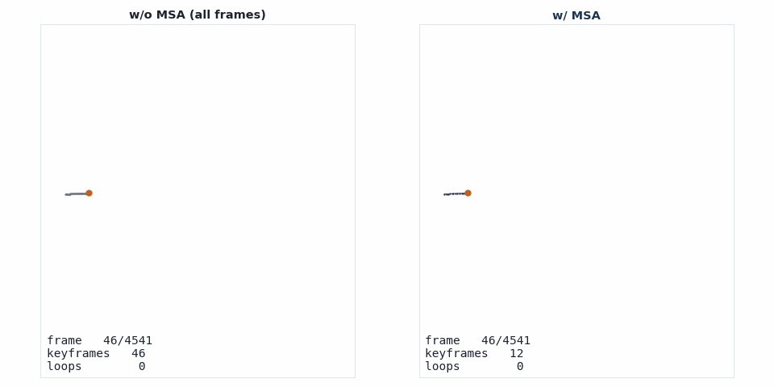

A Minimal Subset Approach for Informed Keyframe Sampling in Large-Scale SLAM
공간지능특론 · Spatial AI and Robotics Lab.
원 논문: N. Stathoulopoulos, C. Kanellakis, G. Nikolakopoulos, IEEE RA-L, vol. 11, no. 1, pp. 738–745, 2026. 이 페이지는 수업 프로젝트로 만든 리뷰·재현 페이지입니다.
Overview
이 프로젝트는 논문을 세 가지 축으로 검증합니다.
Code Demo
SLAM의 Front-end와 Back-end를 모듈로 분리하고, MSA를 적용했을 때와 적용하지 않았을 때를 비교합니다.
Multi-Environment
도심(KITTI)뿐 아니라 논문에서 다루지 않은 야지(DiTer) LiDAR 데이터에도 적용합니다.
Comparison
가장 흔히 쓰는 고정 간격(Fixed Interval) 키프레임 방식과 같은 조건에서 비교합니다.
Code Demo
① Front-end
- LiDAR 오도메트리: KISS-ICP
(DiTer는 scan-to-scan GICP) - 스캔마다 전역 디스크립터:
OverlapTransformer 또는 Scan Context
② MSA 키프레임 샘플링
- 슬라이딩 윈도우에서 디스크립터의 중복도·정보량으로 최소 부분집합 선택
- 저자 공식 코드(opt-key) 사용
- 비교군: 고정 간격 2 m
③ Back-end
- 장소 인식: 키프레임 디스크립터 top-3 검색
- 루프 검증: GICP 정합
- 포즈 그래프 최적화: GTSAM iSAM2
세 단계는 모듈로 분리되어 있어 ②만 바꿔 끼우면 w/o MSA(모든 프레임)와 w/ MSA를 같은 Front-end·Back-end 조건에서 비교할 수 있습니다. 아래 Try It Yourself에서 직접 실행해 볼 수 있습니다.

Try It Yourself
LiDAR 스캔 시퀀스를 넣고 비교할 방법을 고르면, Code Demo와 같은 파이프라인(Front-end → 키프레임 샘플링 → Back-end)이 All frames(w/o MSA)와 고른 방법들을 같은 조건에서 돌리고 결과를 아래에 그립니다.
Video
공간지능특론 프로젝트 중간 발표
Code & Citation
코드: github.com/shyun-28/msa-keyframe (공식 MSA 구현 LTU-RAI/opt-key를 submodule로 사용)
git clone --recursive https://github.com/shyun-28/msa-keyframe.git python run.py --config configs/kitti00.yaml --methods all msa python page_assets.py # 이 페이지의 그림 · GIF 다시 만들기
원 논문 인용
@article{stathoulopoulos2026msa,
title = {A Minimal Subset Approach for Informed Keyframe Sampling in Large-Scale SLAM},
author = {Stathoulopoulos, Nikolaos and Kanellakis, Christoforos and Nikolakopoulos, George},
journal = {IEEE Robotics and Automation Letters},
volume = {11},
number = {1},
pages = {738--745},
year = {2026}
}
References
- N. Stathoulopoulos, C. Kanellakis, G. Nikolakopoulos, “A Minimal Subset Approach for Informed Keyframe Sampling in Large-Scale SLAM,” IEEE RA-L, vol. 11, no. 1, pp. 738–745, 2026.
- I. Vizzo et al., “KISS-ICP,” IEEE RA-L, 2023.
- J. Ma et al., “OverlapTransformer,” IEEE RA-L, 2022.
- K. Koide, “small_gicp,” JOSS, 2024.
- M. Kaess et al., “iSAM2,” ICRA, 2011.
- A. Geiger et al., “Are we ready for Autonomous Driving? The KITTI Vision Benchmark Suite,” CVPR, 2012.
- S. Jeong, H. Kim, Y. Cho, “DiTer: Diverse Terrain and Multi-Modal Dataset for Field Robot Navigation in Outdoor Environments,” IEEE Sensors Letters, 2024.
- T. Shan et al., “LIO-SAM,” IROS, 2020.
- Y. Huang et al., “DiSCo-SLAM,” IEEE RA-L, 2022.
- Y. Chang et al., “LAMP 2.0,” IEEE RA-L, 2022.
- K. Chen et al., “Direct LiDAR Odometry,” IEEE RA-L, 2022.
- B. Kim et al., “Adaptive Keyframe Generation based LiDAR Inertial Odometry …,” ICRA, 2023.
- Q. Zeng et al., “Entropy-based Keyframe Established and Accelerated Fast LiDAR Odometry …,” ITOEC, 2023.